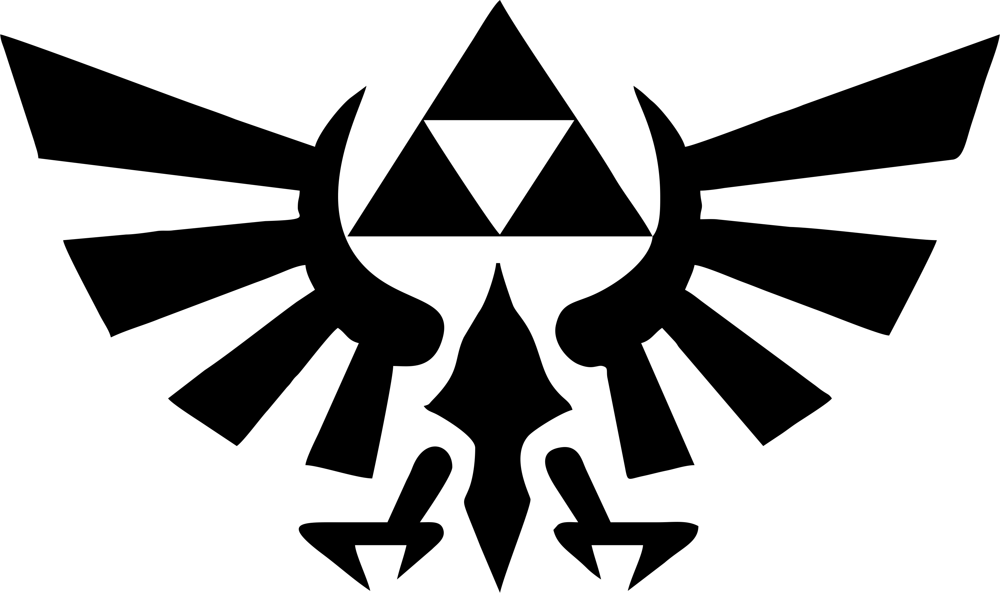

Favoritos de Hyrule
Guarda tus personajes, criaturas y lugares favoritos del universo Zelda.
No hay favoritos guardados todavía.

💚 Favoritos
Guarda tus personajes, criaturas y lugares favoritos del universo Zelda.
No hay favoritos guardados todavía.